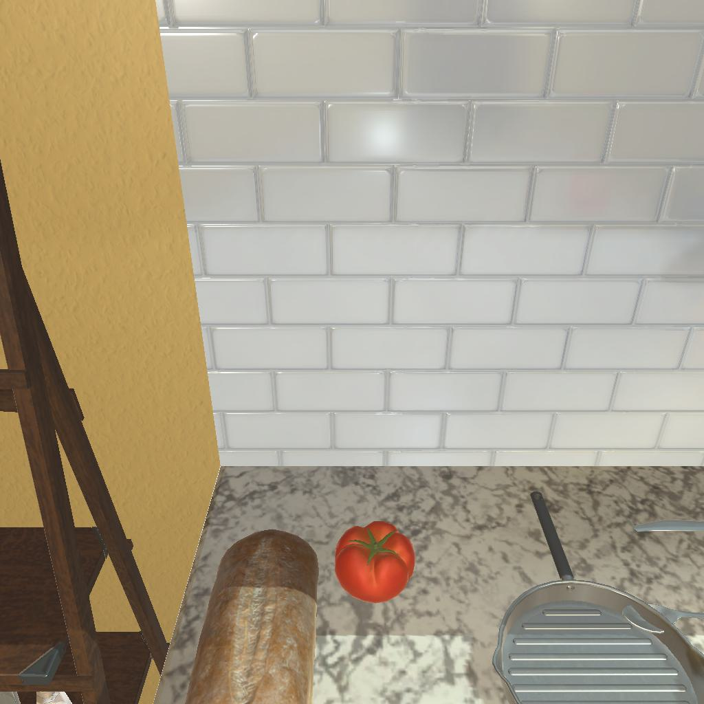

---------------------------------------------------------task: 16---------------------------------------------------------
--------------------------------------------------------------------------------------------------------------------------------------------------------------------
--------------------------------------------------------------------------------------------------------------------------------------------------------------------
Step:--------------------------------------------------------------------------7-------------------------------------------------------------------------------
----------------------------------------
VLM Prompt:
Image1:
Image2:
Image3:
**Instruction**
1. Analyze the provided images to identify all visible household objects and compare the difference between images (e.h. whether the object is opened or not and taken on hand or not), focusing on those relevant to the task description "put a cool pan in sinkbasin."
2. Use the analysis of images and the task hint "The agent must find an object of the desired type, pick it up, go to a fridge, cool the object with the fridge, then find the correct location to place it, and put it down there. The agent does not need to use the fridge button or open the fridge to cool the object, and the agent just needs to do action that is "cool the object with the fridge"." to answer the question: what is the most reasonable action in the choices for the task description "put a cool pan in sinkbasin"?
3. Decide and write the answer using the template: The answer is: (i): , where i is the real number. If there is no desired object in images, search every place based on **Initial Observation** to find the object. And if no one is exactly correct, choose a similar answer.
**Initial Observation**
You are in the middle of a room. Looking quickly around you, you can see cabinet (1-9), countertop (1-3), drawer (1-9), stoveburner (1-4), microwave (1), sink (1), fridge (1), toaster (1), coffeemachine (1), sinkbasin (1), shelf (1-3), garbagecan (1)
**Answer Choices**
(1): go to cabinet 1
(2): go to cabinet 2
(3): go to countertop 2
(4): go to drawer 1
(5): go to drawer 2
(6): go to drawer 3
(7): go to drawer 4
(8): go to stoveburner 1
(9): go to drawer 5
(10): go to stoveburner 2
(11): go to stoveburner 3
(12): go to stoveburner 4
(13): go to cabinet 3
(14): go to cabinet 4
(15): go to microwave 1
(16): go to cabinet 5
(17): go to cabinet 6
(18): go to cabinet 7
(19): go to sink 1
(20): go to fridge 1
(21): go to toaster 1
(22): go to coffeemachine 1
(23): go to cabinet 8
(24): go to drawer 6
(25): go to drawer 7
(26): go to drawer 8
(27): go to sinkbasin 1
(28): go to shelf 1
(29): go to shelf 2
(30): go to countertop 3
(31): go to shelf 3
(32): go to drawer 9
(33): go to cabinet 9
(34): go to garbagecan 1
(35): take pan 1 from countertop 1
(36): take bread 1 from countertop 1
(37): take tomato 1 from countertop 1
(38): take spoon 1 from countertop 1
(39): take butterknife 1 from countertop 1
(40): take saltshaker 1 from countertop 1
(41): take cup 1 from countertop 1
(42): examine countertop 1
**Answer**
Let's think step by step by following the instructions.
----------------------------------------
----------------------------------------
Original Response:
First, we analyze the provided images to identify all visible household objects. In all three images, we see the same objects on what appears to be "countertop 1": a loaf of bread, a tomato, a pan, a spoon, a butter knife, a salt shaker, and a cup.
Next, we compare the difference between images. However, there is no difference between the three images provided - all objects remain in the same position and state, with no indication of any object being opened or taken on hand.
The task description is "put a cool pan in sinkbasin." The task hint suggests that the agent must find a pan, cool it with the fridge, then put it in the sinkbasin. Since the pan is already identified on "countertop 1," the agent does not need to search for it. The agent also does not need to use the fridge button or open the fridge to cool the object.
Therefore, the most reasonable action from the choices provided would be to first take the pan from the countertop, then go to the fridge to cool the pan, and finally go to the sinkbasin to place it.
However, the provided answer choices do not directly include the action to cool the pan with the fridge. The closest relevant actions are to take the pan from the countertop and to go to the sinkbasin. Since the pan needs to be cooled first before being placed in the sinkbasin, the most reasonable first action would be to take the pan.
The answer is: (35): take pan 1 from countertop 1.
----------------------------------------
----------------------------------------
>>> Refine Original VLM Response and Get Pure Action: take pan 1 from countertop 1
----------------------------------------
-----------------------------------------------------------------
Running time: 20.535626649856567 seconds
Total Money: 9.355240000000006
-----------------------------------------------------------------
-----------------------------------------------------------------
Text Observation:You pick up the pan 1 from the countertop 1.
-----------------------------------------------------------------
UNSUCCEED